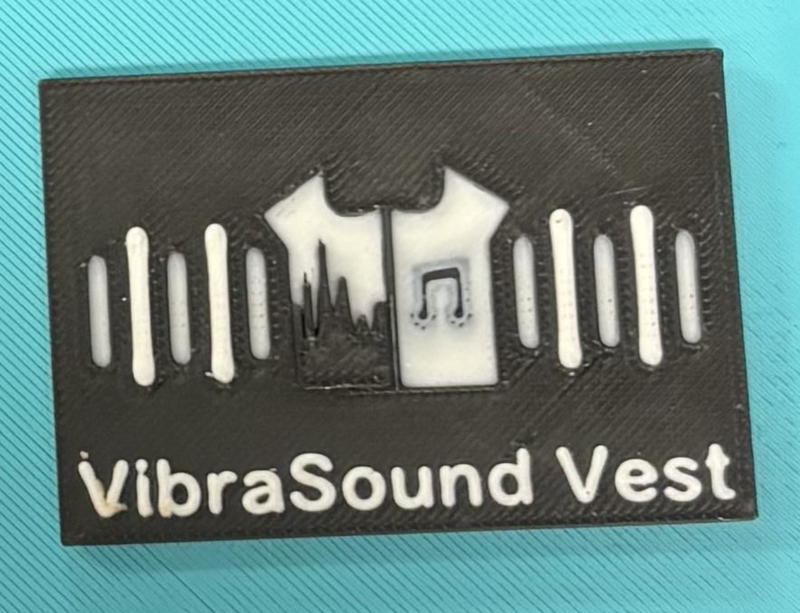
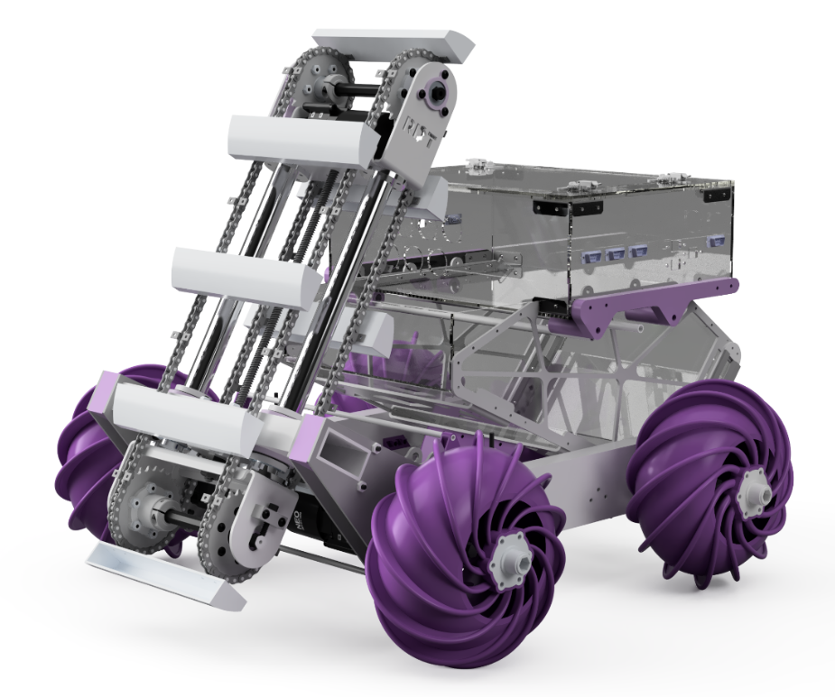
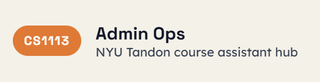
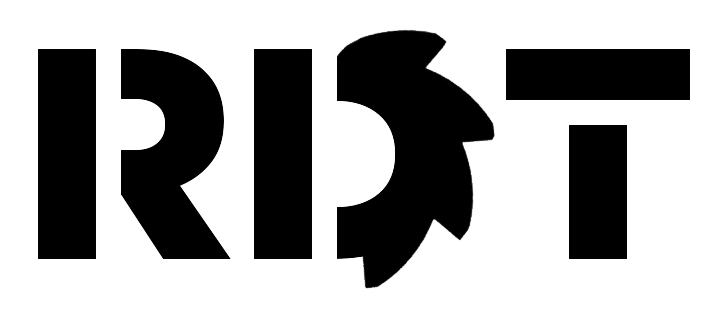

Projects

Audio Vibration Vest
An accessible wearable vest meant for deaf individuals that translates audio into vibrations via Fast Fourier Transform (FFT). This was done as part of my introductory engineering class, where I worked with a partner on a semester long design project. Notable components include the usage of an Arduino Mega, Raspberry Pi 4, and eight vibration motors soldered and wired to two motor drivers.
Lunar Exploration Rover
As part of the competition for the VIP I'm currently in (RDT), the subsystem I'm in is responsible for the software of an autonomous rover that can traverse on a lunar surface and excavate and deposite lunar regolith. The software is written primarily with ROS2 in Python. Notable autonomy components involve RTAB-MAP for obstacle detection and mapping, AprilTag detection for localization, NAV2 for path planning, and state machine logic for autonomy cycles. To simulate the rover, we use Gazebo as a model.

Activities

Computer Science Course Assistant
I currently work as a CS course assistant for CS 1113. As a course assistant, I teach weekly lab sections, host office hours, and conduct homework and quiz gradings for students.
Robotic Design Team
One of the leads for the Robotic Design Team's (RDT) software competency, whose goal is to participate in NASA's Lunabotics competition. More specifically, I am currently the software systems engineer and I work with the mechanical and electrical systems engineers to plan and design robot requirements and specifications.
